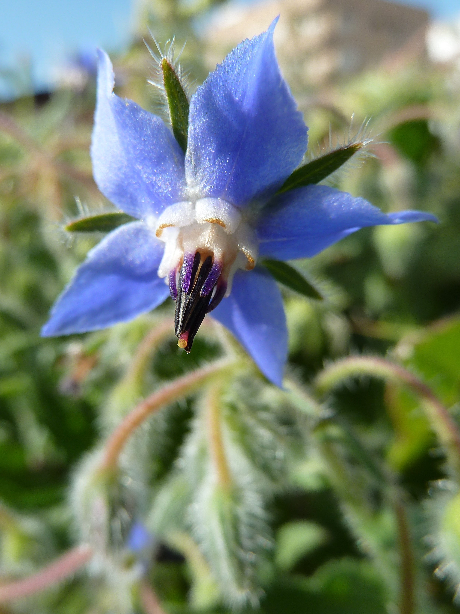
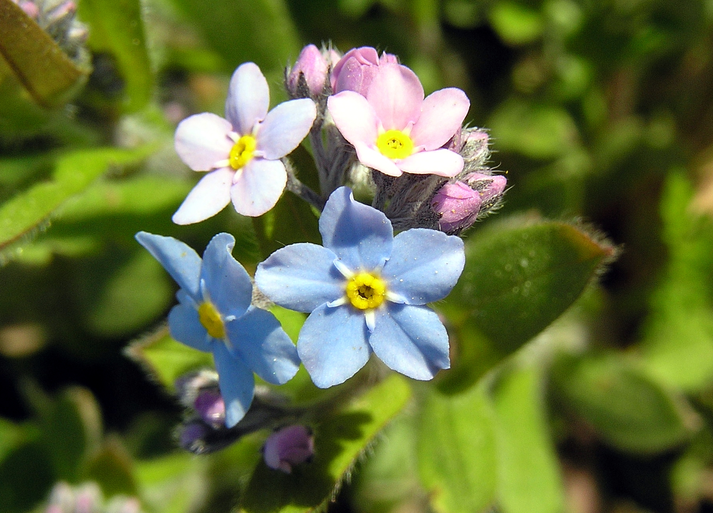
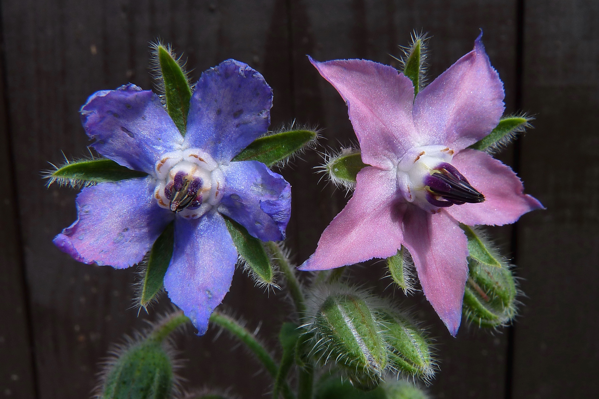
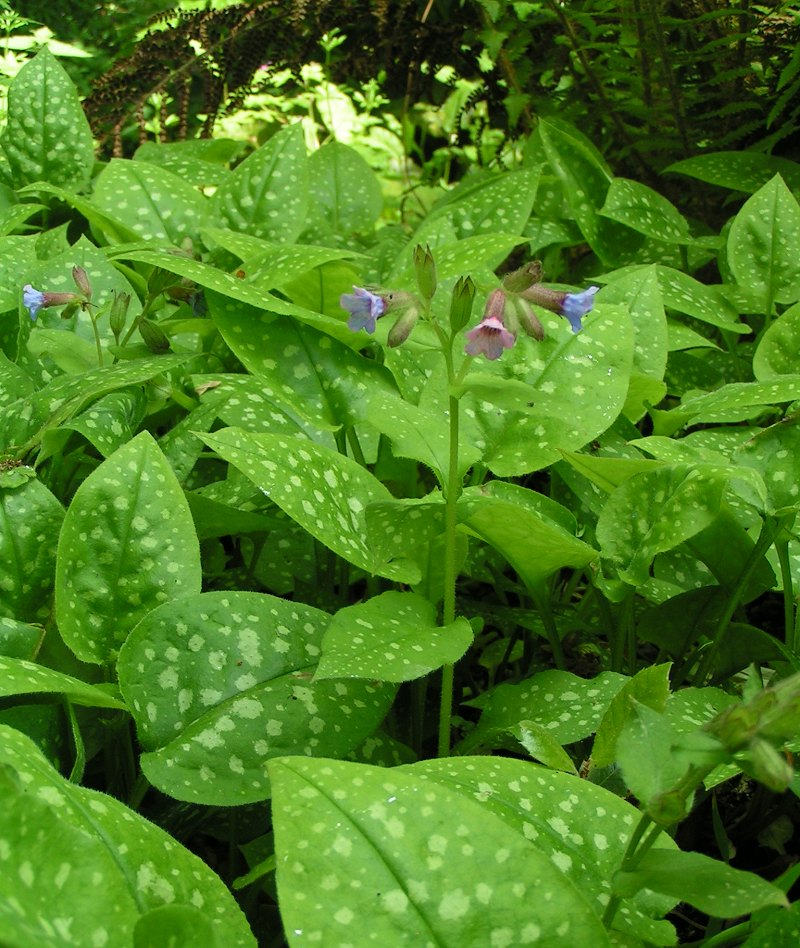

Boraginaceae
borage/forget-me-not family
|  Borago officinalis (borage) from Wikimedia Commons by Philmarin - Own work, CC BY-SA 3.0 |
 Mertensia virginica (Virginia bluebell) from Wikimedia Commons by Nicholas A. Tonelli from Pennsylvania, USA - Shenks Ferry Wildflower Preserve (3), CC BY 2.0 |
 Amsinckia tessellata (bristly fiddleneck) from Wikimedia Commons by Walter Siegmund (talk) - Own work, CC BY-SA 4.0 |
 Myosotis arvensis (field forget-me-not) from Wikimedia Commons by Sedum Tauno Erik - Own work, CC BY-SA 2.5 |
{kind=link}
{kind=link}
botanical characteristics
Botany in a Day, p. 142-4 | "Boraginaceae", Wikipedia
- growth form
- shrubs, trees, and herbs
- stems/leaves
- simple, alternate leaves (or a combination of alternate and opposite leaves)
- leaves usually have a narrow shape; many are linear or lance-shaped
- leaves and stems often hairy
- flowers
- flower spikes often curl like a scorpion's tail with flowers blooming on the upper surface
- flowers are bisexual and mostly regular
- 5 sepals (usually separate) and 5 united petals
- reproductive structures
- 5 stamens attached to the corolla tube, alternate with the petals
- ovary positioned superior
- 2 united carpels (may have false partitions)
- matures as 4 separate nutlets or sometimes achenes
distribution
"Boraginaceae", Wikipedia | "Angiosperm families - Boraginaceae Juss.", DELTA
- 146 to 154 genera and about 2000 species with a worldwide distribution
- temperate to tropical distribution
- fewer members in cool temperate and tropical regions, with a strong Mediterranean concentration
ecological roles
"Boraginaceae", Wikipedia
- most pollination is by hymenopterans, such as bees
- in some species, anthocyanins cause the flowers to change color from red to blue with age; this may be a signal to pollinators that a flower is old and depleted of pollen and nectar
common pharmacological constituents
- multiple members contain pyrrolizidine alkaloids, and therefore are potentially toxic to the liver
- multiple members contain allantoin, which helps the body produce new tissue matter and repair damaged tissue
"Angiosperm families - Boraginaceae Juss.", DELTA
- inulin recorded (Cynoglossum); cyanogenic (rarely), or not cyanogenic; alkaloids present, or absent; iridoids not detected; saponins/sapogenins absent; proanthocyanidins absent; flavonols present (usually), or absent (Echium); kaempferol and quercetin (usually), or quercetin; ellagic acid absent (11 species, 9 genera)
patterns in medicinal actions
- combination of astrigent and demulcent properties yields a gentle medicine for the body
- internal medicine seems to be most useful for the lungs and the intestines -- areas where moisture is integral to function
- wound healing/tissue growth
Botany in a Day, p. 142-4
- mildly astringent, good internally as a tea or externally as a poultice for wounds/excretions that need an astringent to tighten up tissues
- some species are mildly mucilagenous/emollient
traditional/cultural uses
Botany in a Day, p. 142-4
- the leaves of several members (e.g., Anchusa, Borago, Mertensia) used as salad greens or pot herbs
- Amsinckia seeds are ground into a flour (but may be poisonous to cattle)
- Anchusa officinalis used interally as an expectorant, alterative, and to stop diarrhea
- Borago officinalis used to reduce fevers, stimulate milk production, and calm nerves
- Cynoglossum similar in use to comfrey: astringent and demulcent, a useful poultice for burns/wounds and internally for sore throat or diarrhea
- Symphytum reknown for its help in recovery from wounds and broken bones and to support the lungs/respiratory system
warnings
Botany in a Day, p. 142-4
- hairs on the vegetation may irritate the skin and cause dermitits for some individuals
- many species contain minute amounts of pyrrolizidine alkaloids and may be toxic with sustained use
extra information
prominent genera
- Amsinckia (fiddlenecks)
- Anchusa (buglosses/alkanets)
- Borago (borages)
- Cynoglossum (houndstongues/beggarsticks)
- Mertensia (bluebells)
- Myosotis (forget-me-nots)
- Symphytum (comfreys)
plant highlights
see list of materia medica entries here
Borago officinalis
|  from Wikimedia Commons by Hans Bernhard (Schnobby) - Own work, CC BY-SA 3.0 |
common names: borage, starflower en español: borraja |
{kind=link}
description
"Borage", Wikipedia
- bristly or hairy all over the stems and leaves
- leaves are alternate and simple
- flowers are complete, perfect with five narrow, triangular-pointed petals
- flowers are most often blue, although pink flowers are sometimes observed
- flowers arise along scorpioid cymes to form large floral displays with multiple flowers blooming simultaneously, suggesting that borage has a high degree of geitonogamy (intraplant pollination)
distribution
"Borage", Wikipedia
- native to the Mediterranean region, and has naturalized in many other locales
- grows satisfactorily in gardens in most of Europe, such as Denmark, France, Germany, the United Kingdom, and Ireland
- not a perennial, but it remains in the garden from year to year by self-seeding
medicinal/magical uses
The Modern Herbal Dispensatory, p. 193-4
- adrenal tonic, anti-inflammatory, antidepressant, decongestant, expectorant, cooling, moistenting, nourishing
- seed oil is high in GLA (a polyunsaturated fatty acid) and used internally for inflammation, skin conditions, and arthritis
- leaf supports adrenal function and lifts sadness and depression
The New Age Herbalist, p. 32-3
- has been used since ancient times for countering melancholic states
- brings courage, 'revives the hypochondriac', and 'cheers the hard student'
- hormonal action: supportive effect on the adrenals, increases milk supply
- hot infusion is diaphoretic, good cough remedy
- useful culinary herb
preparation methods
The Modern Herbal Dispensatory, p. 193-4
- infusion
- tincture
- glycerite
- seed oil
warnings
The Modern Herbal Dispensatory, p. 193-4 | The New Age Herbalist, p. 32-3
- contains pyrrolizidine alkaloids and should be used with caution, avoid excessive consumption
- contraindicated in pregnancy
- seed oil is safe
Pulmonaria officinalis
|  from Wikimedia Commons by TeunSpaans, CC BY-SA 3.0 |
common names: lungwort en español: pulmonaria |
{kind=link}
description
"Pulmonaria officinalis", Wikipedia
- basal leaves are green, cordate, more or less elongated and pointed and always with rounded and often sharply defined white or pale green patches
- upper surface of the leaves has tiny bumps and it is quite hairy
- the 5-petal flowers are red or pink at first, later turn to blue-purple during the anthesis, by changing the pH value inside of the petals
distribution
"Pulmonaria officinalis", Wikipedia
- perhaps the most widespread plant in Europe
- distributed west in the Ardennes up to the Netherlands, Denmark and southern Sweden
- missing in Norway and it is only naturalized in the British Isles
- reaches central Russia and the Caucasus and it occurs in the Balkans and in northern to central Italy
medicinal/magical uses
The New Age Herbalist, p. 33
- used to treat respiratory disorders: speckled appearance of the leaves was thought to resemble the lungs
- useful expectorant
- contains silica that restores the elasticity of the lungs
- reduces bronchial mucus
- contains tannins and alantoin that makes it useful for treating wounds and hemorrhoids
preparation methods
- infusion
- poultice
warnings
- no known warnings
sources
"Angiosperm families - Boraginaceae Juss." on DELTA - DEscription Language for TAxonomy. Retrieved 19 August 2025.
"Borage" on Wikipedia. Retrieved 19 August 2025.
"Boraginaceae" on Wikipedia. Retrieved 19 August 2025.
Easely, Thomas and Steven Horne. The Modern Herbal Dispensatory (2016)
Elpel, Thomas J. Botany in a Day: The Patterns Method of Plant Identification (2021)
Goldberg Blackthorn, Samantha. Ace of Cups Herbal Medicine and Botanical Magic Herbal School (2024)
Mabey, Richard et al. The New Age Herbalist (1988)
"Pulmonaria officinalis" on Wikipedia. Retrieved 19 August 2025.